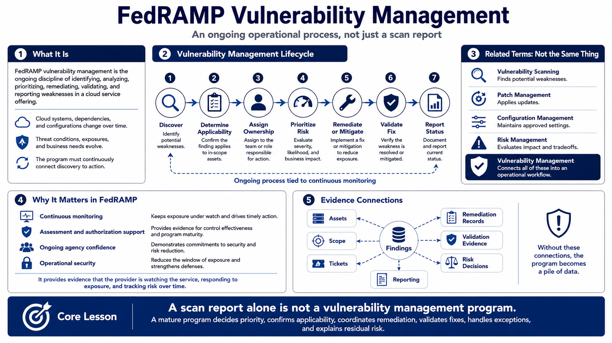

What FedRAMP Vulnerability Management Means
Connecting to LMS... Progress: in progress

Narration
FedRAMP vulnerability management is the ongoing discipline of identifying, analyzing, prioritizing, remediating, validating, and reporting weaknesses in a cloud service offering. It is not just a scan report, and it is not a one-time activity before assessment. Cloud systems change, dependencies change, threat conditions change, and new vulnerabilities appear. A vulnerability management program keeps those changes connected to action.
It helps to separate related terms. Vulnerability scanning is a method for finding potential weaknesses. Patch management focuses on applying updates. Configuration management keeps systems aligned to approved settings. Risk management evaluates impact and tradeoffs. Vulnerability management connects all of those activities into a workflow: discover the issue, understand whether it applies, assign ownership, remediate or mitigate, validate the result, and report the status.
In a FedRAMP context, vulnerability management is central to continuous monitoring because it provides evidence that the provider is watching the service, responding to exposure, and tracking risk over time. It supports assessment, authorization support, ongoing agency confidence, and operational security. Findings need to connect to assets, scope, tickets, remediation records, evidence, risk decisions, and reporting. Without those connections, the program becomes a pile of data.
The core lesson is that a scan report alone is not a vulnerability management program. A scan report may tell the team where to look, but it does not decide priority, confirm applicability, coordinate change windows, validate fixes, handle exceptions, or explain residual risk. Mature vulnerability management is an operating process that reduces exposure and creates trustworthy evidence.